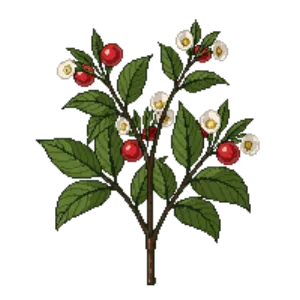

Compact Strawberry Tree
Arbutus unedo 'Compacta'

Compact Strawberry Tree is a shrub for focal point, structure, suited to full sun and loam, sandy soil or chalk, flowering Oct, Nov, Dec.
| Type | Shrub |
|---|---|
| Mature height | 250 cm |
| Spread | 200 cm |
| Aspect | full sun |
| Foliage | Evergreen |
| Hardiness | USDA 7a-10a, RHS H5 |
| Pollinator-friendly | Yes |
| Pet-safe | Not confirmed |
Where to use it in a border
At around 250 cm, it sits best toward the back of a border, or on its own as a focal point with room around it. Give it about 200 cm of room to spread. It is hardy across USDA zones 7a to 10a and rated H5 by the RHS, so check it suits your area before planting.
It appears in our lists of full sun, sandy soil, chalk soil, evergreen plants, pollinator-friendly plants.
Flowering through the year
Worth knowing
- Evergreen, so it keeps the border furnished through winter.
- Its flowers are valued by bees and other pollinators.
Good companions
Plants that share its conditions and style, chosen to complement its place in the border:
- Basket-of-goldto edge in front
- Broad-leaved sea lavenderto edge in front
- California Brittlebushto edge in front
- Coast Rosemaryto edge in front
- Jerusalem sageto edge in front
- Lavender 'Hidcote'to edge in front
Garden styles
Coastal Mediterranean Wildlife garden
See Compact Strawberry Tree set in a full border, with spacing and companions worked out for your own conditions, in Border Builder.